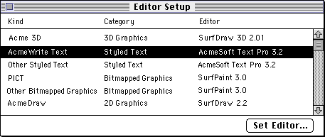
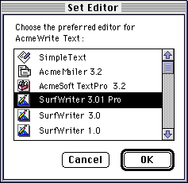
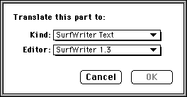

Binding
Binding is the runtime process of assigning executable code to instance data. For parts, binding is the assignment of the correct part editor to a given part. For example, when the stored data of a part is to be brought into memory, OpenDoc binds a specific part editor to that data, loads the editor (if it has not already been loaded), and transfers control to the editor so that it can read in the data of the part. The resulting combination of part editor bound to part data constitutes the part object in memory, including both state and behavior.On opening a document, OpenDoc binds editors to all parts that need to be displayed. During execution, OpenDoc binds part editors to part data when a part is read in or when its editor is changed. OpenDoc may unload part editors at various times, especially if memory is low. Also, when a part needs more memory, the document shell can unload the part editors used by inactive parts. Thus, a given part editor may need to be bound and loaded more than once in a session.
The interface to the binding process is not entirely public. OpenDoc accomplishes it with the help of the binding object (class
ODBinding). The binding object considers part-kind and part-category information provided by part editors, part-kind information stored with parts, and preferences specified by users when choosing an editor for each part.Information Used for Binding
This section describes the information your part editor must provide to make binding work correctly. On the Mac OS platform, you provide most of that information in a name-mapping resource (type'nmap').Part Kinds Supported by an Editor
For binding of parts to editors, these two kinds of information need to be available to OpenDoc:OpenDoc decides which editor to bind to a given part based on the part kind and part category of the data. Part kind is a typing scheme, analogous to file type, that can include specifications of data type, creator application, and even version. Part kinds are ISO strings such as "text", "SurfDraw:Bitmap", or "AcmeDB:Kind:FlatDatabase". Part-editor developers define the part kinds that their editors use; each kind is a specific data format that the editor understands.
- Your part editor must include certain structures containing information about the data formats it handles. OpenDoc uses those structures to construct name space objects that it uses to bind part editors to parts.
- Your stored parts must include information about the data formats in them.
The fact that part editors can store multiple representations of their parts also means that they are not necessarily confined to reading and editing a single part kind. Your SurfWriter 3.01 Pro editor, for example, may be capable of reading and writing data of SurfWriter 1.0 ("SurfWriter:Kind:StyledText") and plain text ("text") format, as well as its own preferred format ("SurfWriter:Kind:IntlText").
- Tokenized strings
- At runtime, OpenDoc and by part editors often manipulate ISO strings as tokens (short, regularized representations of the strings). Before passing ISO strings to OpenDoc, you therefore may need to convert them to tokens with the
Tokenizemethod of the session object.
At a minimum, your part editor needs to store only your own preferred part kind. A better alternative is to store your preferred kind plus one common standard public format. Beyond that, you should probably store additional formats only on user instruction, to keep your stored parts from being too large.
The method for defining the part kinds your editor supports differs among platforms. On the Mac OS, your part editor's name-mapping resource needs to include a table that lists, in fidelity order, the part kinds your editor can read and write. That information is converted at runtime into a name space object that the document shell can access.
Part Kinds Stored in a Part
Your part editor stores each of its parts in a format, or part kind, that your editor recognizes. But your part is not limited to one part kind per part; it can store multiple representations of its data in a single part. You store different representations in thekODPropContentsproperty of your part's storage unit, as values with different part kinds, arranged in order of fidelity.Fidelity refers to the faithfulness of a given representation to a part editor's native, or preferred, part kind. For example, assume that you store a part created with your SurfWriter 3.01 Pro part editor as three separate representations with the following part kinds: "SurfWriter:IntlText", "SurfWriter:StyledText", and "text". The highest-fidelity representation is "SurfWriter:IntlText", which represents the native format of your part editor; the "SurfWriter:StyledText" representation is an older, simpler format that lacks some of the latest SurfWriter features; and the "text" representation is plain, unformatted ASCII text.
Storing part representations in order of fidelity is crucial to ensuring that the best available editor is bound to a part.
Standard Part Kinds
To increase the chances that your parts will be readable in all situations, you should if possible store at least one widely readable part kind, in addition to your editor's preferred part kind, every time you write your part to storage. On the Mac OS, certain common formats (such as'TEXT'and'PICT'), expressed as file-type signatures rather than ISO strings, are defined as standard part kinds. (See "Mac OS Binding Information" for information on how to support those standard kinds.) Other standards, for Mac OS as well as for other platforms, may be defined by CI Labs.Part editors supporting the plain text or styled text categories should support some basic Macintosh file types for text (such as
'TEXT'). This allows users to drag non-OpenDoc files from the Finder into an OpenDoc document and have the file contents merged into a text part or embedded as a new part. OpenDoc does not automatically read data from a non-OpenDoc file. Instead, parts read data from the file when performing a paste or receiving a drop, or when initializing from a storage unit containing a file type kind.If you develop for the Mac OS platform, note these four standard text file types in common use:
In addition, your part could also support other text file types.
- '
TEXT' -- ASCII characters in the data fork; 'styl' resource (containing style information) in the resource fork- '
sEXT' -- same format as 'TEXT', but a stationery file created by SimpleText or TeachText- '
ttro' -- same format as 'TEXT', but treated as a read-only file by SimpleText and TeachText.Part Categories Supported by an Editor
Part category is a typing scheme similar to part kind, except that it defines only a broad classification of the data manipulated by a part editor. Like part kinds, part categories are ISO strings; they have designations such as "plain text", "3D graphics", "time", or "sound". (The full ISO string for the styled-text category, for example, is the OpenDoc ISO-string prefix followed by "OpenDoc:Category:Text:Styled".)Your part editor must specify the part categories corresponding to the part kinds it supports. On the Mac OS platform, your editor's name-mapping resource needs to include a table that lists, for each part kind that your editor can read and write, the part category or categories that that part kind belongs to. (A part kind can correspond to more than one part category; for instance, an unstyled text part could belong to both "plain text" and "styled text" part categories.)
Table 11-2 lists the part categories that OpenDoc currently recognizes and briefly explains the general kind of stored data each represents.
Part category is not included in the information stored with a part; only part editors store information about the categories of the part kinds they manipulate. OpenDoc uses that information at runtime to help the user define a default editor for each category.
User Strings
OpenDoc manipulates editor names, part kinds, and part categories as tokenized ISO strings. However, as noted in the following sections, there are several points at which the user can intervene in the binding process, and ISO strings are not appropriate for user display. OpenDoc requires that user-
readable text be in the form of international strings that can be in any script or language.Therefore, your part editor needs to provide, in its name-mapping resource, international strings for its editor name, part kinds, and part categories so that OpenDoc can display them to the user at the appropriate times.
The user-readable name of your part editor (in English) might typically be close to, but not exactly the same as, its ISO string name and the kinds of parts it creates. For example, "SurfWriter 3.0" might be the user-readable name of a part editor whose editor ID (ISO string name) is "SurfCorp:SurfWriter3.0" and whose native part kind is "SurfCorp:SurfWriter:IntlText".
Mac OS Binding Information
On the Mac OS platform, your name-mapping resource must provide at least one more table. The table defines a Mac OS file type for each OpenDoc kind that your editor can edit. The Mac OS uses that information to provide the proper icon for each of your parts.An additional Mac OS-specific table is necessary in some cases. If your part editor can edit any of the standard Mac OS file types (such as
'TEXT'and'PICT'), you must provide a table that lists all the standard file types and standard clipboard data types that you support. The table must also give a user-
visible string and category designation for each type. This table is completely separate from the table of OpenDoc kinds supported by your editor, as described in "Part Kinds Supported by an Editor"; you should not put any standard Mac OS kinds into that table.
- Note
- If your part editor supports only standard Mac OS file types, then it should include this table but not include the tables that specify other part kinds and categories and the user strings for them. See "Standard Part Kinds"
Apple Guide Support
On the Mac OS platform, if your part editor is to provide Apple Guide help to the user, you have two responsibilities.
- You must write the appropriate guide files and install them in the Editors folder on the user's system. For installation instructions, see Appendix C, "Installing OpenDoc Software and Parts." For information on writing guide files, see Apple Guide Complete.
- You must include a name-mapping resource that specifies the name (or names) of the guide files to be used by your editor.
Binding Information for Part Viewers
Part viewers must provide one additional table, to notify OpenDoc that they are viewers and not full editors. This table consists of an editor ID and a designation of the type of viewer it represents. Version 1.0 of OpenDoc recognizes only one viewer type,kODSimpleViewer.The Binding Process
This section describes when binding occurs and how OpenDoc decides which editor to bind to a part, depending on which editors are available on the user's machine.When Binding Occurs
Part binding occurs whenever your part is instantiated, typically when OpenDoc or another part calls theCreatePartorAcquirePartmethod of your draft. For example, binding can occur in the following situations:Binding can thus occur in many different situations, not just when a part's document first opens. Your part editor needs to be able to function with any part to which it has just been bound, including a part that it has never edited before.
- When a draft opens, OpenDoc binds a part editor to each visible part.
- As the user adds parts to an open document, OpenDoc binds part editors to the new parts.
- Drawing a part requires part binding if OpenDoc has not already bound an editor to the part.
- For a part to accept semantic events, OpenDoc must first bind its editor to it.
- When translation occurs, OpenDoc binds a part editor to the translated part.
Binding to Preferred Editor
The most obvious binding for a part is to the editor that created it. A stored part may have, in its storage unit, a property of typekODPropPreferredEditorthat specifies the editor that last edited the part. That editor is considered the preferred editor of the part. It may be the editor that originally created the part, or it may be an editor that was later bound to it. Every time a new editor is bound to a part, that editor becomes the part's preferred editor and remains so until a different editor is bound to the part.When OpenDoc searches for an editor to bind to a part, it looks first for the preferred editor. If the preferred editor is present, OpenDoc binds it to the part.
If the preferred editor is not present on the user's system, or if there is no property of type
kODPropPreferredEditorin the part, OpenDoc examines in order each of the part kinds in the stored part, seeking to match that part kind with a part kind supported by an editor on the user's system. OpenDoc first examines the part's preferred kind (if thekODPropPreferredKindproperty exists) and then searches the remaining part kinds from highest fidelity to lowest (that is, from first to last in the contents property).For each part kind under consideration, OpenDoc attempts to find an editor in this priority order:
The following sections describe each of these steps.
- default editor for kind
- default editor for category
- any available editor for that kind
Binding to Default Editor for Kind
After the preferred editor, the highest-priority binding for a part is to the default editor for kind, the user's chosen default editor for all parts of the part kind under consideration. For every part editor installed on a user's system, OpenDoc maintains a table that specifies the part kinds for which that editor is the default editor.By setting the default, the user chooses, for example, a single favorite text editor for processing any text part of a given part kind (when the part's preferred editor is not available). Figure 11-1 shows the Editor Setup dialog box, which displays all the default editors chosen by the user.
Figure 11-1 Editor Setup dialog box

Through the Set Editor button in the Editor Setup dialog box, the user can change the defaults. Figure 11-2 shows a Set Editor dialog box in which the user has specified the SurfWriter 3.01 Pro editor as the default editor for all text whose part kind (expressed as a user-visible string) is "AcmeWrite Text". Only editors that can handle the part kind being considered appear in the dialog box.Figure 11-2 The Set Editor dialog box

If, for the part kind under consideration, OpenDoc finds its default editor for kind, OpenDoc binds that editor to the part.Binding to Default Editor for Category
If, for the part kind under consideration, there is no specified default editor for kind, OpenDoc looks for the default editor for category for the part category (or categories) of that part kind. As with the default editor for kind, OpenDoc maintains a list of the user's choice for default editor for each part category. By setting this default, the user chooses, for example, a single favorite graphics editor for editing any kind of bitmap (when its preferred editor and the default editor for its kind are not defined or not available).In the Editor Setup dialog box shown in Figure 11-1
Binding to Any Available Editor for That Kind
If there is no default editor for the category of the part kind under consideration, OpenDoc then searches for any editor in the system that can read that part kind. If it finds such an editor, OpenDoc binds the editor to the part.In the previous example, if the AcmeSoft Text Pro 3.2 editor cannot read SurfWriter 3.0 text, OpenDoc then looks for an editor that can. If it turns out that MacWrite II Text 5.0 can read SurfWriter 3.0 text, OpenDoc binds it to the part.
If this attempt fails, OpenDoc repeats the entire process for each of the remaining (lower-fidelity) part kinds in the part. It looks first for the default editor for that kind, then the default editor for its category, and finally any editor that can read it.
Returning to the same example, suppose that the part has also stored a plain text version of its data. On the second round, OpenDoc locates the default editor for the plain text (AcmeSoft Text Pro 3.2) and binds it to the part. In this case, style information is lost, but the user is still able to read and edit the part.
This example illustrates the obvious advantage of having multiple stored representations of your part. The user has a better chance of being able to open and use some form of your part, even when your part editor is not available. Default editors exist only to allow the user to express a preference for an individual editor when a part's preferred editor is not present.
Binding to Editor of Last Resort
If there is no part editor on the user's machine that can read any of the part kinds stored in a part, the part remains unviewable and uneditable. However, OpenDoc still binds an editor to the part so that the part's document can be opened. This is the editor of last resort; it is always available, and it displays an icon view of the part within the area of the part's frame.On viewing the icon displayed by the editor of last resort, the user can select it and display the Part Info dialog box. In that dialog box, OpenDoc displays the part kind of the highest-fidelity version of the part. The user can use that information to determine what editor to purchase in order to read the part.
If the user attempts to open the part, OpenDoc displays a dialog box in which the user can specify a translation of the part to a part kind that can be read
by an available editor, if such a translation is possible. See "Binding With Translation" (next).The editor of last resort never modifies the part it displays; it does not change the part kinds or their storage order in the part's storage unit.
Binding With Translation
If the user's machine has no part editor that can handle any of the part kinds in a stored part, it can still be possible to find an editor--if any of the part's kinds can be translated into a part kind for which an editor does exist.OpenDoc uses the translation object to give the user the opportunity to convert a part from a part kind that cannot be used to one that an existing part editor can read and edit.
Part editors initiate translation during data transfer (see "Translation"). OpenDoc initiates translation in the following situations:
To set up a translation that will allow the user to open a part or document for which there is no editor, OpenDoc displays the translation dialog box (Figure 11-3). The dialog box contains pop-up menus from which the user selects a part kind to translate to and a specific editor to use with the translated part.
- if the user specifies it after attempting to open a part displayed by the editor of last resort
- if the user specifies it after attempting to open a document whose root part has no available editor
- if the user specifies, in the Document Info dialog box, a part kind for the root part that requires translation (see the section "The Document Shell and the Document Menu" for more information)
- if the user specifies, in the Save a Copy dialog box, a part kind for the root part that requires translation (see the section "The Document Shell and the Document Menu" for more information)
Figure 11-3 The translation dialog box

OpenDoc sets up the pop-up menu of part kinds in the translation dialog box (and in the Document Info and Save a Copy dialog boxes) as described in the section "Translation". Once the user picks a translated part kind, OpenDoc calls the translation object to perform the translation. Then OpenDoc binds the translated data to its new part editor and opens the part or document.Consequences of Changing Part Editor or Part Kind
As a result of the binding process, your part editor can be bound to a part that it hasn't previously edited. (Binding to your editor is especially likely if the user has specified your editor as the preferred editor of that part's kind or category.) This binding may occur in these situations:In each of these situations, once the binding occurs, the part's storage unit contains at least one part kind that your editor can read. However, the stored data in the part may not necessarily have exactly the same part kinds, in exactly the same order, that your editor would normally write into a part's storage unit. In this case, OpenDoc calls your part's
- The part's document opens on a machine that does not have the part's previous editor, and your part editor can read its part kind or else the user translates the part to a kind that your editor can read.
- The user, using the Paste As command, pastes a part into a document and either specifies your part editor as the preferred editor or specifies that the part be translated to a part kind readable by your part editor.
- The user, in a part's Part Info dialog box or a document's Document Info dialog box, specifies your part editor as the preferred editor or changes the part's kind (perhaps through translation) to a part kind readable by your part editor.
- The user makes a copy of a document with the Document menu's Save a Copy command and specifies a part kind for the root part (perhaps requiring translation) that is readable by your part editor.
ChangeKindmethod, passing it the new part kind.OpenDoc can also call your part's
ChangeKindmethod at times other than when your part editor is bound to a part. If your part editor supports more than one part kind and the user has specified (for example, in the Part Info dialog box or Document Info dialog box) that your current part's kind be changed to another kind that your part editor can read, OpenDoc calls your part'sChangeKindmethod and passes it the new part kind. This is the interface toChangeKind:void ChangeKind(in ODType kind);Your part editor needs to start manipulating the part's data in the new format. YourChangeKindmethod must store the data in an order that reflects your own fidelities. It should also make sure that the new part kind is specified in the part'skODPropPreferredKindproperty.For example, suppose that your SurfWriter 1.1 part editor supports only "SurfWriter:StyledText" and "text" formats. Suppose further that your editor is bound to a part whose highest-fidelity part kind is "SurfWriter:IntlText" (perhaps originally created with the SurfWriter 3.0 editor) but that also contains a "SurfWriter:StyledText" representation. In this case, you need to make sure that "SurfWriter:StyledText" is specified as the preferred kind when you subsequently write the part. You could also include a "text" representation, which must be stored after the preferred kind. (If your part editor supports it, you can optionally write a higher-fidelity version than the preferred kind; if you do, you must place it before the preferred kind in your storage unit.)
- Note
- These modifications do not occur if the editor of last resort is bound to a part. It never modifies the part it "displays"; it does not change the part kinds of the values, or their fidelity ordering, in the part's storage unit.